In this homework, I implemented a way to render Bezier curves and surfaces using the de Casteljau algorithm. I also learned about triangle meshes and the half-edge data structure. I created a few functions that manipulate the half-edge data structure, including edge flip, edge split, and loop subdivision. I also created a way to calculate area-weighted vertex normals for smooth shading (Phong shading).
I really enjoyed this assignment! I found the half-edge data structure, particularly, to be a very interesting way to store information about a mesh. I also enjoyed learning about the algorithms behind Bezier curves, surfaces, and Phong shading, and how much of it is just simple interpolations repeated across multiple dimensions or components. It was cool to see very "trivial" linear algebra concepts like normals and cross products be used in a more complex way to represent camera placement and shading.
Section I: Bezier Curves and Surfaces
Part 1: Bezier curves with 1D de Casteljau subdivision
The main idea of the de Casteljau algorithm is to recursively calculate the middle points between control points using a parameter \( t \). The formula for getting these intermediate points is determined by:
\[ P_i^{(k)} = (1 - t)\, P_i^{(k-1)} + t\, P_{i+1}^{(k-1)} \]
You are essentially doing linear interpolation between the control points, and then repeating this step many times until you reach one point. This is the evaluated point on the Bezier curve. In the implemented code, I created a function that does one step of this interpolation. The engine then repeats this until a single point is evaluated.
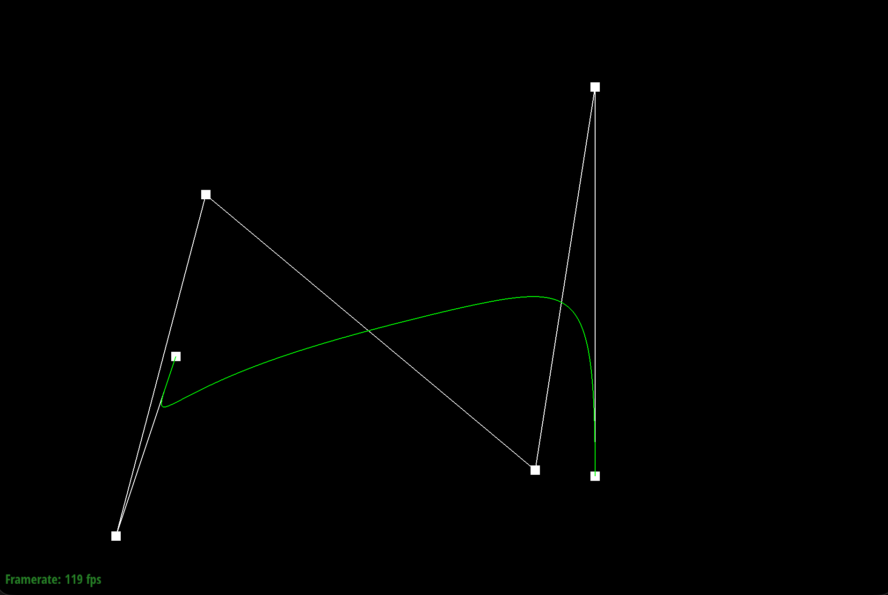
Level 0 w/ 6 control points.
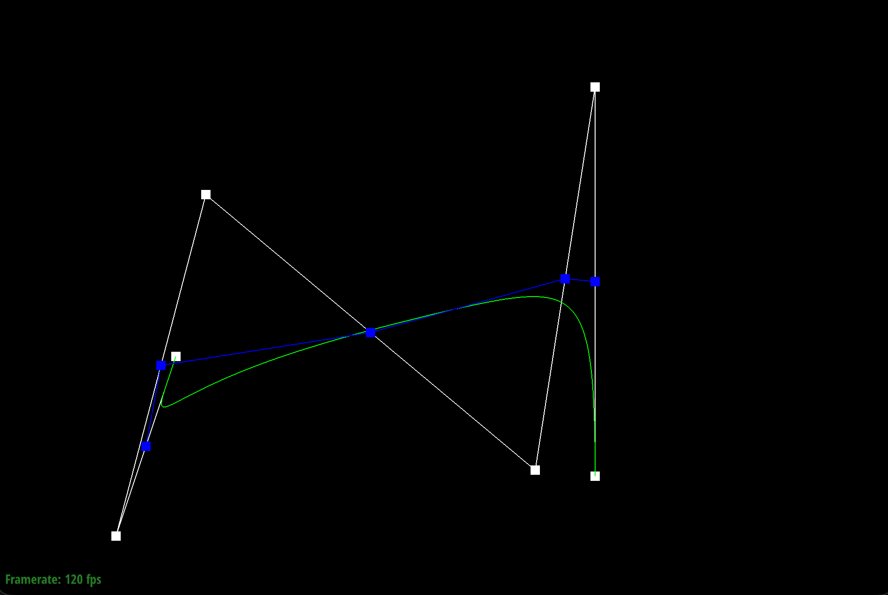
Level 1.
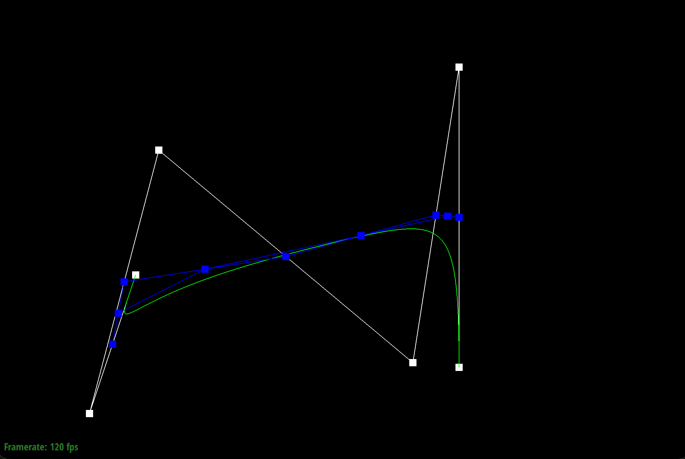
Level 2.
Level 3.
Level 4.
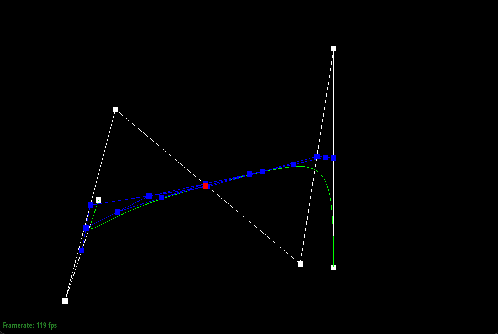
Level 5 w/ the final evaluated point.
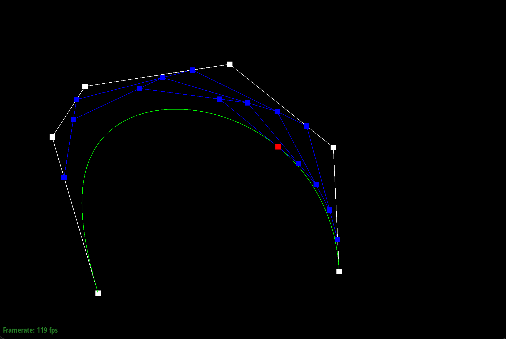
A different curve showcasing the moved control points and parameter \( t \).
Part 2: Bezier surfaces with separable 1D de Casteljau
For Bezier surfaces, the de Casteljau algorithm is applied in two dimensions. To start, there is a grid of control points. The process is to first evaluate the surface in one direction (for example, the u-directionn). This is completed by acting like each row of control points is a separate Bezier curve and applying the de Casteljau algorithm to each row. After finishing this and getting the intermediate points, the algorithm is then applied again in the other direction (for example, the v-direction) using these intermediate points. This then gives the final evaluated point on the Bezier surface.
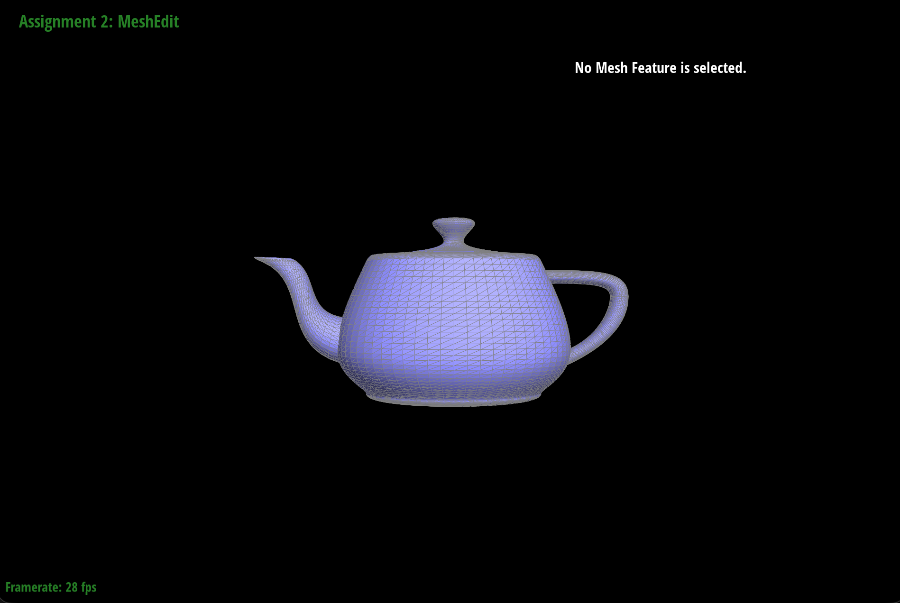
bez/teapot.bez.
Section II: Triangle Meshes and Half-Edge Data Structure
Part 3: Area-weighted vertex normals
To get the normal at a vertex, I iterate through the half-edge structure and go to every triangle that touches it. Then, for each triangle, I take the cross product of two of its edges. The direction of this normal faces outward and is twice the length of the triangle's area. I then add this normal to an overall total. After iterating through all the triangles, I normalize the total to get the final vertex normal. This is done for every vertex in the mesh. Phong shading interpolates these normals along the surface of the triangle, which is what makes it smooth. The default flat shading uses the triangle's normal for the entire triangle, which is why it looks flat.
Teapot with default flat shading.
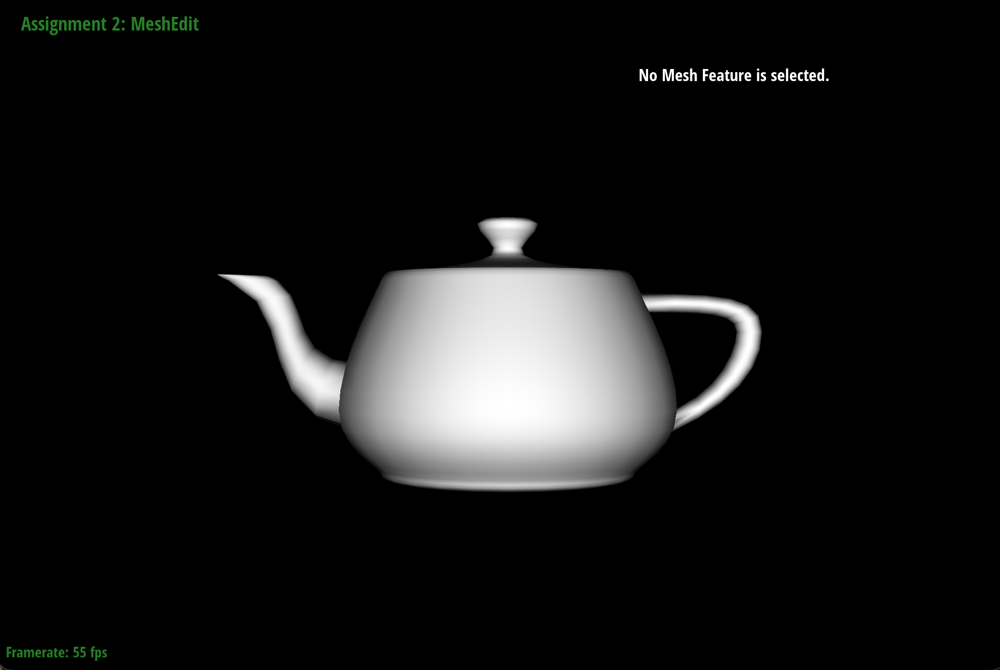
Teapot with Phong shading.
Part 4: Edge flip
This was fun (but tricky!) to implement. To flip an edge, I first collect everything about it (edges, faces, vertices, and halfedges) by taking an iterative pass. Then, I update the halfedge structure using setNeighbors to reflect the new connections. This means updating the next and twin pointers of the halfedges, as well as reassigning the face, edge, and vertex halfedge pointers. While implementing this, I quickly got my wires crossed so I made multiple inline comments that meant to illustrate the different components of the triangles. This made debugging a lot faster.
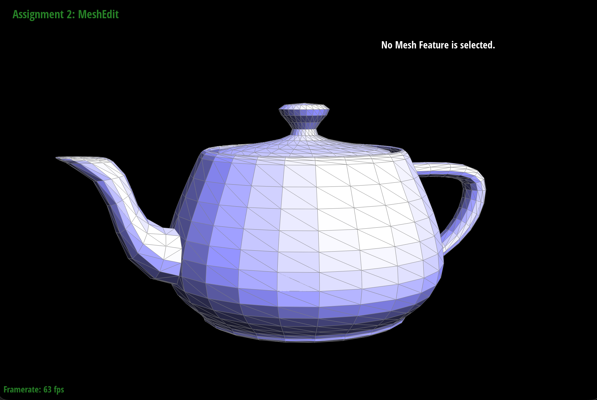
The teapot before any edge flips.
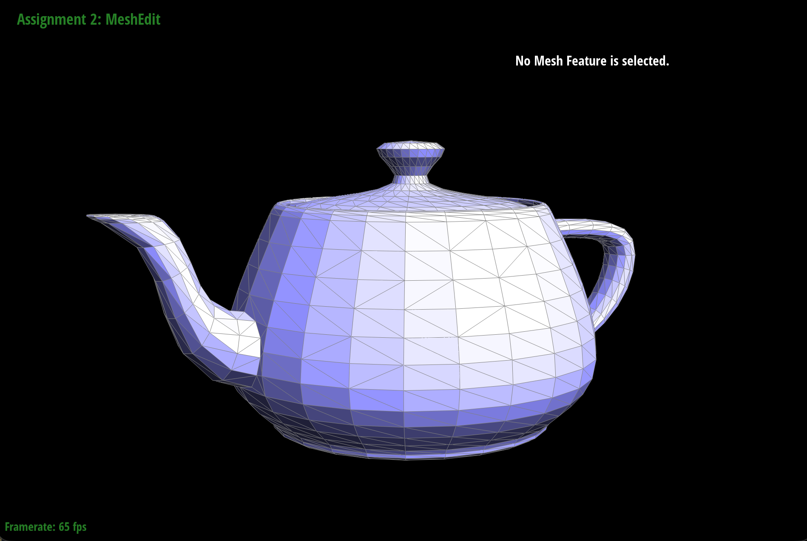
The teapot after some edge flips.
Part 5: Edge split
This was even trickier to implement! My apporach, however, was very similar. I collected everything I needed to know about the triangles using the same code as before. Then, I started by creating a new vertex at the midpoint of the edge to split. I then realized that for this problem, there were so many new components that trying to label them inline would be too much for me to track. So instead, I organized the new components by face and worked my way face-by-face, instead giving the new components numbers instead of labeled positions. I found it easier to track this way. I think worked my way face-by-face, reassigning halfedge components with setNeighbor() and reassigning face, edge, and vertex halfedges along the way. Debugging was a mix of trying this new number labeing system out and recompiling to see if the code would work.
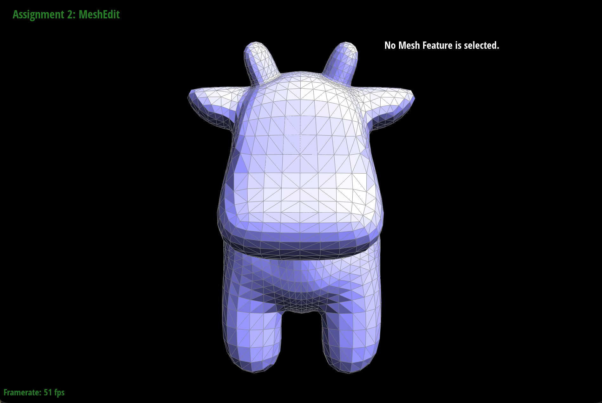
The cow mesh before any edge splits.
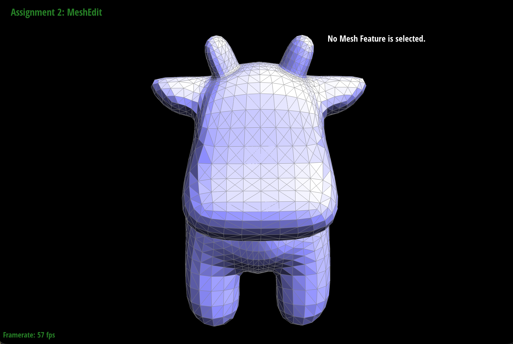
The cow mesh after some edge splits.
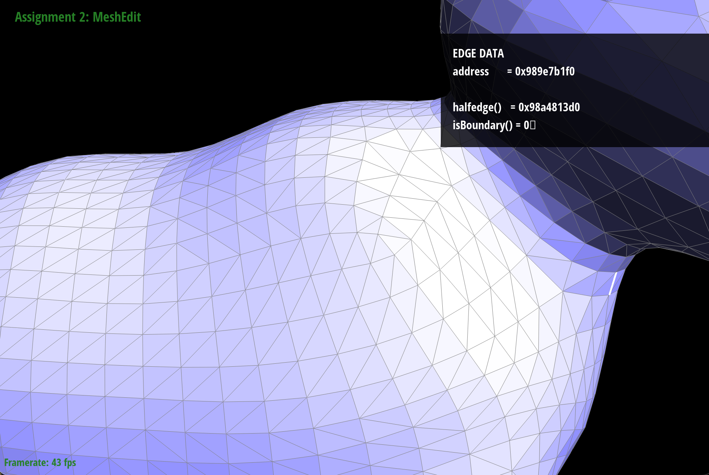
The cow mesh (side view) before splits and flips.
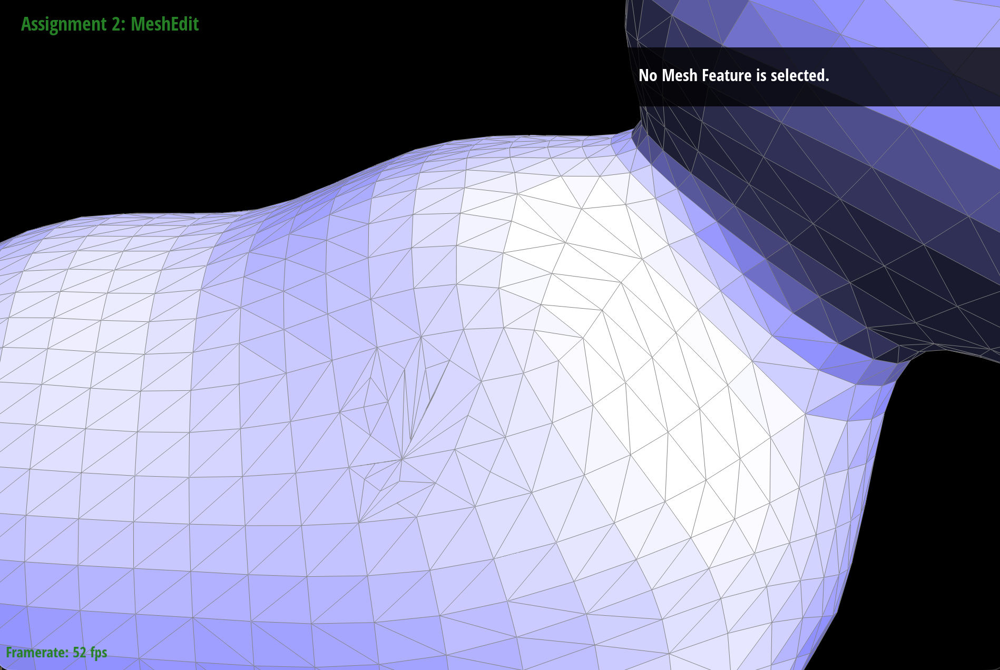
The cow mesh (side view) after a combination of edge splits and edge flips.
Part 6: Loop subdivision for mesh upsampling
To start loop subdivsion, I made a new position for every orginal vertex using a weighted average of the vertex and its neighbors (n is the vertex's degree):
\[ P' = (1 - n u)\, P + u \sum_{i=1}^{n} P_i, \qquad u = \begin{cases} 3/16 & n = 3 \\ 3/(8n) & \text{otherwise} \end{cases} \]
Then, I got a new position for each edge's new midpoint vertex by using the two endpoints of the edge and the two opposite vertices. The formula for this is:
\[ M = \frac{3}{8}(A + B) + \frac{1}{8}(C + D) \]
Then, I split every edge and flipped edges that connected an old vertex to a new vertex, using splitEdge(), flipEdge() and keeping track of component history with the isNew flag.
Then, I updated the positions of all vertices to their new positions by copying newPosition to position.
As part of this process, I performed subdivison on a cube multiple times and observed some asymmetry. The sharp corners and edges slowly started to smooth and curve, creating a blob-like object after multiple subdivisions. This makes sense because subdivision averages out the positions of vertices and each face of this cube was only defined by one diagonal (two half triangles). This means that the diagonals of each face were not symmetric, which caused the asymmetry in the final result.
To try to fix this, I did some preprocessing and split each face's diagonal first. This added a vertex in the middle of each face connected to the four corners, so that every corner now has the same number of neighbors. This made the final result more symmetric and smooth after multiple subdivisions.